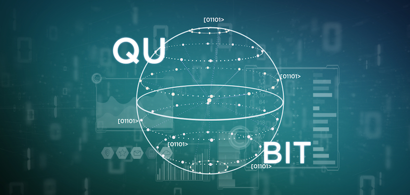
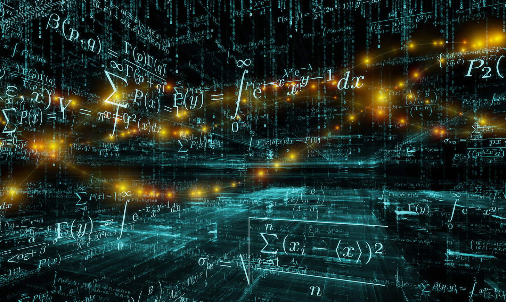
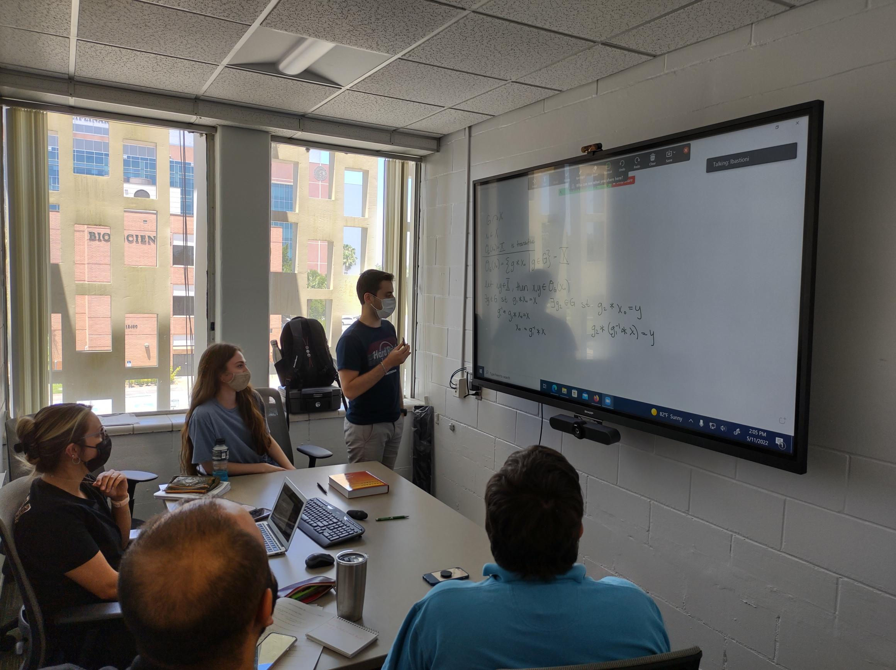

Cryptography
Algebraic and number-theoretic methods for modern cryptography, including post-quantum security, computational hardness, secure protocols, and implementation-aware research.

A year-round research community in cryptography, coding theory, and quantum computing for undergraduates, graduate students, and postdoctoral researchers.
Why join the RTG?
The RTG in Applied Algebra is built around a simple idea: the best way to grow into research is to be part of an active mathematical community early and consistently. At USF, that means working in an environment where undergraduates, graduate students, postdocs, and faculty interact regularly rather than occupying separate worlds.
For prospective students and postdocs, the RTG offers a combination that is hard to get from coursework alone: exposure to current research problems, close mentoring, opportunities to present, interaction across academic levels, and a training culture connected to fast-moving areas such as post-quantum cryptography, data reliability, and quantum information science.
If you are looking for a place where mathematics is both deep and connected to modern technology, this program is meant to be an entry point into that world.
Research directions
Students and postdocs in the RTG engage with a broad mathematical landscape. These three pillars give a good sense of the kinds of problems and communities you can connect with at USF.

Algebraic and number-theoretic methods for modern cryptography, including post-quantum security, computational hardness, secure protocols, and implementation-aware research.

Error-correcting codes, algebraic structures over finite fields, reliable storage and communication, and computational methods that connect pure mathematics with concrete applications.
Quantum algorithms, mathematical aspects of quantum information, and intersections between algebra, computation, and next-generation quantum technologies.

What the RTG feels like
The RTG is not just a collection of funding lines. It is a working research environment. Participants meet current problems through seminars, reading groups, team projects, and ongoing discussions with faculty and peers.
A major strength of the program is its vertically integrated model: undergraduates can see what graduate-level research looks like, graduate students gain mentoring and leadership experience, and postdocs develop independence while contributing to the growth of the broader group.
In practice, that means the RTG supports both mathematical depth and professional formation: learning how to read papers, ask questions, communicate ideas, collaborate effectively, and build a research identity.
Why trainees choose this environment
The RTG is built around repeated interaction with faculty, postdocs, and peers, making it easier to grow steadily into research rather than navigating alone.
Seminars, collaborative discussions, and shared activities help students become part of a real mathematical culture, not just a classroom sequence.
Participants strengthen presentation skills, writing, collaboration, and research habits that matter for graduate school, postdoctoral positions, and long-term careers.
The RTG connects academic-year work, summer opportunities, the REU, and broader research activity into a more continuous pipeline.
The mathematics in the RTG connects to urgent areas including cybersecurity, resilient infrastructure, and quantum information science.
Because the program spans multiple levels, trainees learn not only from mentors but also by mentoring others and contributing to the development of the group.
Connected ecosystem
One of the strengths of the RTG is that it builds on a larger ecosystem already active at USF: the Center for Cryptographic Research, the Quantum Initiative, undergraduate certificate pathways, research seminars, the REU in Cryptography and Coding Theory, and broader outreach efforts.
For prospective trainees, that means there are many ways to enter, stay engaged, and keep growing. The RTG is not an isolated program — it is part of a broader culture of research and training in applied algebra.
Opportunities
The RTG is meant to serve people at different stages through its vertically integrated research groups model.
Students interested in mathematics, cryptography, coding theory, or quantum information can use the RTG as a gateway into serious research through seminars, academic-year projects, and the REU pipeline.
See undergraduate research opportunities →Graduate trainees benefit from a stronger research community, broader mentoring, and sustained exposure to active problems across applied algebra.
Meet faculty and mentors →Postdoctoral researchers can develop independence while mentoring across levels, participating in collaborative projects, and helping shape the next generation of trainees.
See research areas →Beyond USF
The RTG also contributes to a wider vision for Applied Algebra in Florida by helping create connections across institutions, seminars, and collaborative activities.
For trainees, this matters because strong networks create more opportunities: more speakers, more research conversations, more collaborations, and more visibility for work done at USF.